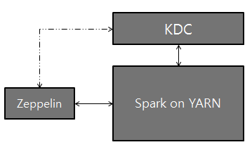

Spark 解释器
原文链接 : http://zeppelin.apache.org/docs/0.7.2/interpreter/spark.html
译文链接 : http://www.apache.wiki/pages/viewpage.action?pageId=10030923
概述
Apache Spark是一种快速和通用的集群计算系统。它提供Java，Scala，Python和R中的高级API，以及支持一般执行图的优化引擎。Zeppelin支持Apache Spark，Spark解释器组由5个解释器组成。
| 名称 | 类 | 描述 |
|---|---|---|
| ％spark | SparkInterpreter | 创建一个SparkContext并提供Scala环境 |
| ％spark.pyspark | PySparkInterpreter | 提供Python环境 |
| ％spark.r | SparkRInterpreter | 提供具有SparkR支持的R环境 |
| ％spark.sql | SparkSQLInterpreter | 提供SQL环境 |
| ％spark.dep | DepInterpreter | 依赖加载器 |
配置
Spark解释器可以配置为由Zeppelin提供的属性。您还可以设置表中未列出的其他Spark属性。有关其他属性的列表，请参阅Spark可用属性。
| 属性 | 默认 | 描述 |
|---|---|---|
| ARGS | Spark命令行参考 | |
| master | local[*] | Spark master uri. |
| 例如：spark://masterhost:7077 | ||
| spark.app.name | Zeppelin | Spark应用的名称。 |
| spark.cores.max | 要使用的核心总数。 | |
| 空值使用所有可用的核心。 | ||
| spark.executor.memory | 1g | 每个worker实例的执行程序内存。 |
| ex）512m，32g | ||
| zeppelin.dep.additionalRemoteRepository | spark-packages, | |
| http://dl.bintray.com/spark-packages/maven, | ||
| false; | id,remote-repository-URL,is-snapshot; |
|
| 每个远程存储库的列表。 | ||
| zeppelin.dep.localrepo | local-repo | 依赖加载器的本地存储库 |
| zeppelin.pyspark.python | python | Python命令来运行pyspark |
| zeppelin.spark.concurrentSQL | python | 如果设置为true，则同时执行多个SQL。 |
| zeppelin.spark.maxResult | 1000 | 要显示的Spark SQL结果的最大数量。 |
| zeppelin.spark.printREPLOutput | true | 打印REPL输出 |
| zeppelin.spark.useHiveContext | true | 如果它是真的，使用HiveContext而不是SQLContext。 |
| zeppelin.spark.importImplicit | true | 导入含义，UDF集合和sql如果设置为true。 |
没有任何配置，Spark解释器在本地模式下开箱即用。但是，如果要连接到Spark群集，则需要按照以下两个简单步骤进行操作。
1.导出SPARK_HOME
在conf/zeppelin-env.sh，导出SPARK_HOME环境变量与您的Spark安装路径。
例如，
export SPARK_HOME=/usr/lib/spark
您可以选择设置更多的环境变量
# set hadoop conf dir
export HADOOP_CONF_DIR=/usr/lib/hadoop
# set options to pass spark-submit command
export SPARK_SUBMIT_OPTIONS="--packages com.databricks:spark-csv_2.10:1.2.0"
# extra classpath. e.g. set classpath for hive-site.xml
export ZEPPELIN_INTP_CLASSPATH_OVERRIDES=/etc/hive/conf
对于Windows，确保你winutils.exe在%HADOOP_HOME%\bin。有关详细信息，请参阅在Windows上运行Hadoop的问题。
2.在“解释器”菜单中设置主机
启动Zeppelin后，转到解释器菜单并在Spark解释器设置中编辑主属性。该值可能因您的Spark群集部署类型而异。
例如，
- local[*] 本地模式
- spark://master:7077 standalone 集群模式
- yarn-client Yarn 客户端模式
- mesos://host:5050 Mesos 集群模式
而已。Zeppelin将使用任何版本的Spark和任何部署类型，而不用这种方式重建Zeppelin。有关Spark＆Zeppelin版本兼容性的更多信息，请参阅Zeppelin下载页面中的“可用的口译员”部分。
请注意，不导出
SPARK_HOME，它以本地模式运行，包含版本的Spark。附带的版本可能因构建配置文件而异。
SparkContext，SQLContext，SparkSession，ZeppelinContext
SparkContext，SQLContext和ZeppelinContext会自动创建并显示为变量名sc，sqlContext并z分别在Scala，Python和R环境中公开。从0.6.1起，spark当您使用Spark 2.x时，SparkSession可以作为变量使用。
请注意，Scala / Python / R环境共享相同的SparkContext，SQLContext和ZeppelinContext实例。
依赖管理
在Spark解释器中加载外部库有两种方法。首先是使用解释器设置菜单，其次是加载Spark属性。
1.通过解释器设置设置依赖关系
有关详细信息，请参阅解释器依赖管理。
2.加载Spark属性
一旦SPARK_HOME被设置conf/zeppelin-env.sh，Zeppelin使用spark-submit作为Spark解释赛跑者。spark-submit支持两种方式来加载配置。第一个是命令行选项，如--master和飞艇可以通过这些选项spark-submit通过导出SPARK_SUBMIT_OPTIONS在conf/zeppelin-env.sh。二是从中读取配置选项SPARK_HOME/conf/spark-defaults.conf。用户可以设置分发库的Spark属性有：
| 火花defaults.conf | SPARK_SUBMIT_OPTIONS | 描述 |
|---|---|---|
| spark.jars | --jars | 包含在驱动程序和执行器类路径上的本地jar的逗号分隔列表。 |
| spark.jars.packages | --packages | 逗号分隔列表，用于包含在驱动程序和执行器类路径上的jar的maven坐标。将搜索当地的maven repo，然后搜索maven中心和由–repositories提供的任何其他远程存储库。坐标的格式应该是groupId:artifactId:version。 |
| spark.files | --files | 要放置在每个执行器的工作目录中的逗号分隔的文件列表。 |
以下是几个例子：
-
SPARK_SUBMIT_OPTIONS在conf/zeppelin-env.shexport SPARK_SUBMIT_OPTIONS="--packages com.databricks:spark-csv_2.10:1.2.0 --jars /path/mylib1.jar,/path/mylib2.jar --files /path/mylib1.py,/path/mylib2.zip,/path/mylib3.egg" -
SPARK_HOME/conf/spark-defaults.confspark.jars /path/mylib1.jar,/path/mylib2.jar spark.jars.packages com.databricks:spark-csv_2.10:1.2.0 spark.files /path/mylib1.py,/path/mylib2.egg,/path/mylib3.zip
3.通过％spark.dep解释器加载动态依赖关系
注：
%spark.dep解释负载库%spark和%spark.pyspark而不是%spark.sql翻译。所以我们建议你改用第一个选项。
当你的代码需要外部库，而不是下载/复制/重新启动Zeppelin，你可以使用%spark.dep解释器轻松地完成以下工作。
- 从maven库递归加载库
- 从本地文件系统加载库
- 添加额外的maven仓库
- 自动将库添加到SparkCluster（可以关闭）
解释器利用Scala环境。所以你可以在这里编写任何Scala代码。需要注意的是%spark.dep解释前应使用%spark，%spark.pyspark，%spark.sql。
这是用法
%spark.dep
z.reset() // clean up previously added artifact and repository
// add maven repository
z.addRepo("RepoName").url("RepoURL")
// add maven snapshot repository
z.addRepo("RepoName").url("RepoURL").snapshot()
// add credentials for private maven repository
z.addRepo("RepoName").url("RepoURL").username("username").password("password")
// add artifact from filesystem
z.load("/path/to.jar")
// add artifact from maven repository, with no dependency
z.load("groupId:artifactId:version").excludeAll()
// add artifact recursively
z.load("groupId:artifactId:version")
// add artifact recursively except comma separated GroupID:ArtifactId list
z.load("groupId:artifactId:version").exclude("groupId:artifactId,groupId:artifactId, ...")
// exclude with pattern
z.load("groupId:artifactId:version").exclude(*)
z.load("groupId:artifactId:version").exclude("groupId:artifactId:*")
z.load("groupId:artifactId:version").exclude("groupId:*")
// local() skips adding artifact to spark clusters (skipping sc.addJar())
z.load("groupId:artifactId:version").local()
ZeppelinContext
Zeppelin 在Scala / Python环境中自动注入ZeppelinContext变量z。ZeppelinContext提供了一些额外的功能和实用程序。
对象交换
ZeppelinContext扩展地图，它在Scala和Python环境之间共享。所以你可以把Scala的一些对象从Python中读出来，反之亦然。
Scala
// Put object from scala
%spark
val myObject = ...
z.put("objName", myObject)
// Exchanging data frames
myScalaDataFrame = ...
z.put("myScalaDataFrame", myScalaDataFrame)
val myPythonDataFrame = z.get("myPythonDataFrame").asInstanceOf[DataFrame]
Python 展开原码
# Get object from python
%spark.pyspark
myObject = z.get("objName")
# Exchanging data frames
myPythonDataFrame = ...
z.put("myPythonDataFrame", postsDf._jdf)
myScalaDataFrame = DataFrame(z.get("myScalaDataFrame"), sqlContext)
表格创作
ZeppelinContext提供了创建表单的功能。在Scala和Python环境中，您可以以编程方式创建表单。
Scala
%spark
/* Create text input form */
z.input("formName")
/* Create text input form with default value */
z.input("formName", "defaultValue")
/* Create select form */
z.select("formName", Seq(("option1", "option1DisplayName"),
("option2", "option2DisplayName")))
/* Create select form with default value*/
z.select("formName", "option1", Seq(("option1", "option1DisplayName"),
("option2", "option2DisplayName")))
%spark.pyspark
# Create text input form
z.input("formName")
# Create text input form with default value
z.input("formName", "defaultValue")
# Create select form
z.select("formName", [("option1", "option1DisplayName"),
("option2", "option2DisplayName")])
# Create select form with default value
z.select("formName", [("option1", "option1DisplayName"),
("option2", "option2DisplayName")], "option1")
在sql环境中，可以在简单的模板中创建表单。
%spark.sql
select * from ${table=defaultTableName} where text like '%${search}%'
要了解有关动态表单的更多信息，请检查Zeppelin 动态表单。
Matplotlib集成（pyspark）
这两个python和pyspark解释器都内置了对内联可视化的支持matplotlib，这是一个流行的python绘图库。更多细节可以在python解释器文档中找到，因为matplotlib的支持是相同的。通过利用齐柏林内置的角度显示系统，可以通过pyspark进行更先进的交互式绘图，如下所示：
解释器设置选项
您可以选择其中之一shared，scoped以及isolated配置Spark解释器的选项。Spark解释器为每个笔记本创建分离的Scala编译器，但在scoped模式（实验）中共享一个SparkContext。它在每个笔记本isolated模式下创建分离的SparkContext 。
用Kerberos设置Zeppelin
使用Zeppelin，Kerberos Key Distribution Center（KDC）和Spark on YARN进行逻辑设置：

配置设置
-
在安装Zeppelin的服务器上，安装Kerberos客户端模块和配置，krb5.conf。这是为了使服务器与KDC进行通信。
-
设置
SPARK_HOME在[ZEPPELIN_HOME]/conf/zeppelin-env.sh使用火花提交（此外，您可能需要设置export HADOOP_CONF_DIR=/etc/hadoop/conf） -
将以下两个属性添加到Spark configuration（
[SPARK_HOME]/conf/spark-defaults.conf）中：spark.yarn.principal spark.yarn.keytab> 注意：如果您没有访问以上spark-defaults.conf文件的权限，可以选择地，您可以通过Zeppelin UI中的“解释器”选项卡将上述行添加到“Spark Interpreter”设置。
-
而已。玩Zeppelin！